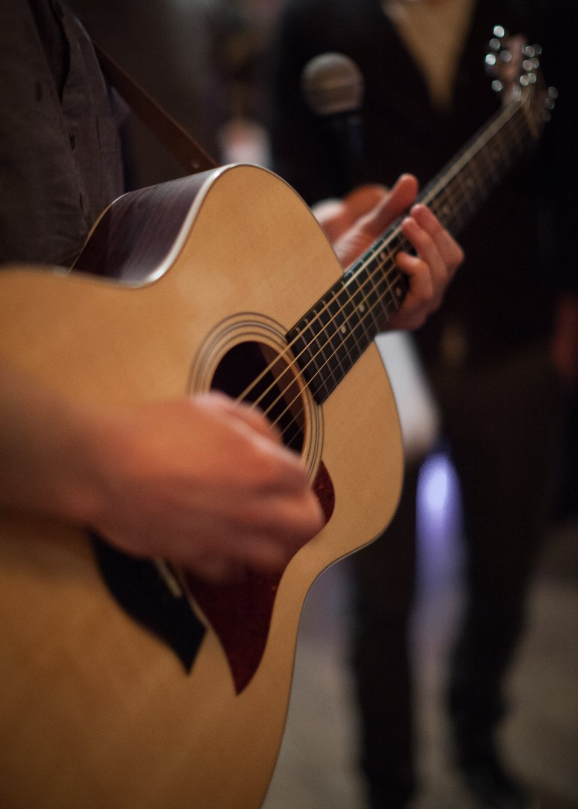

LIVEイベントも開催されるとのことで…インスタをチェックしようと思います。インスタで見つけて来店されたお客様
Live Event
不定期開催、
LIVEイベント

アナログCafeでは、不定期でLIVEイベントを開催しています。本格オーディオが据えられた店内で、生の音と録音された音、両方の魅力を楽しめる時間です。開催日程・出演者・参加方法などの詳細は、その都度Instagramで告知しています。最新情報・開催スケジュールはInstagramをご確認ください。
イメージ画像です（Openverse / CC0・PDM素材使用、実店舗の写真ではありません）
Instagram
Instagramで最新情報をチェック
開催日程・出演者・参加方法の最新情報はInstagramでご案内予定です。アカウント情報は確定後にリンクを設置いたします。
Instagramアカウント情報：ご確認中（確定後にリンクを設置します）
Voice